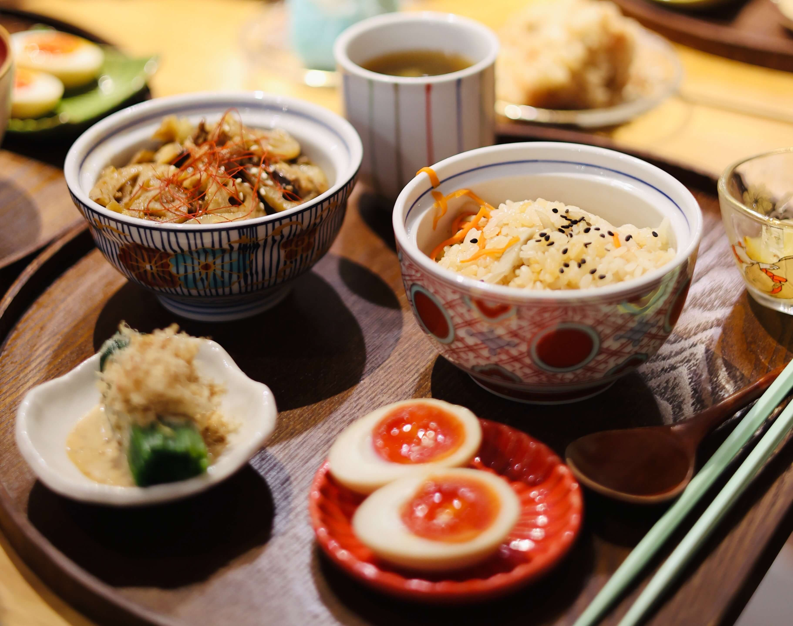

今だからこそ見直したい「和食」

普段、私たちが何気なく口にしている和食ですが、その基本は一汁三菜。ご飯、味噌汁、お漬物の他、主菜(魚またはお肉)、副菜として季節毎の野菜と豆類で構成されています。
昔から「旬の野菜を食べましょう」と言いますが、それは素材がじっくりと時間をかけて蓄積してきた旨みや栄養価が最高になったところでいただいて、効率よく栄養を取り風邪などの予防をしましょうね、ということです。それでは書く季節毎の旬の野菜について調べてみましょう。